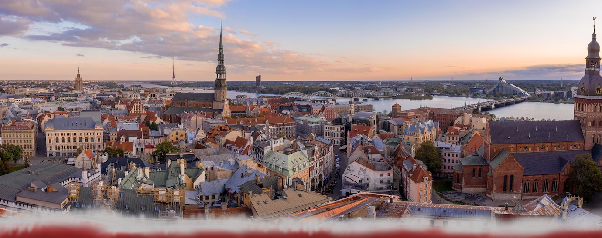
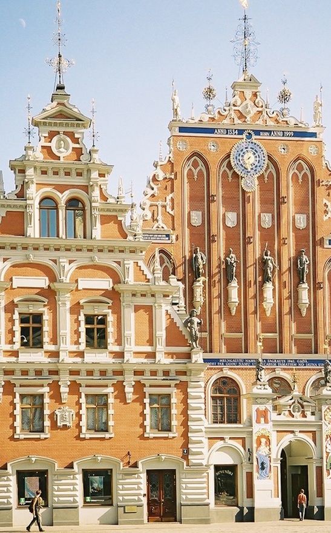
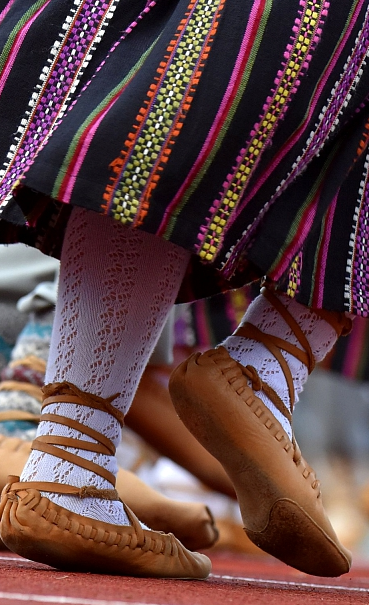

Rīga ir Latvijas galvaspilsēta, kurā dzīvo apmēram 633 000 no valsts 1.87 miljoniem iedzīvotājiem. Tā ir lielākā pilsēta Baltijas valstīs un ir slavena ar savu UNESCO Pasaules mantojumā iekļauto vecpilsētu, neatkārtojamo jūgendstila arhitektūru, vēsturi, kas sniedzas līdz pat 13. gadsimtam un cilvēkiem, kas turpina to pilnveidot līdz pat šodienai. Mūsu projekta mērķis ir parādīt Rīgas daudzpusīgo identitāti, paplašināt cilvēku zināšanas par to, kā arī iemūžināt pilsētas dvēseli pašu veidotajā kodā ar PyGirls kursā attīstītajām prasmēm.
Pārbaudi savas zināšanas par mūsu pilsētu!
Vēsture
Rīgas vēsture ir vēstījums par Rīgas pilsētas attīstību no tās dibināšanas brīža līdz mūsdienām, uz kā visas Latvijas vēsture balstās. Vai spēsi atmodināt savu iekšējo vēsturnieku?
Arhitektūra

Jūgendstila arhitektūra Rīgā veido aptuveni vienu trešdaļu no visām Rīgas centra ēkām, padarot Latvijas galvaspilsētu par pilsētu ar visaugstāko jūgendstila arhitektūras koncentrāciju pasaulē. Cik daudz tu par to zini?
Kultūra

Katrai valstij ir tai raksturīgs kultūras, simbolu un paražu kopums, kas padara to unikālu. Latvija, protams, nav izņēmums. Bagāta kultūra un senas tradīcijas ir tas, kas ir vijies cauri laikiem un kas lielā mērā veido to, kāda Latvija ir šodien.
PAR MUMS!
apraksts par mums un pygirls